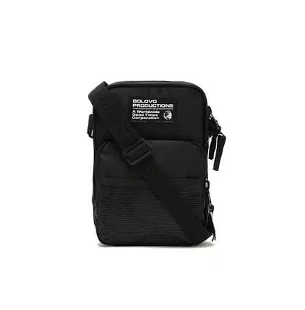

No streetwear, a bolsa deixou de ser acessorio e virou peca central do look. Uma shoulder bag boa vende sozinha, circula pela cidade e coloca a sua marca nas costas de quem importa. Se voce tem (ou quer ter) uma label, este e o guia dos modelos que mais funcionam — e de como produzir cada um com marca propria.
Por que bolsa e o produto de entrada perfeito do streetwear
Camiseta todo mundo faz. A bolsa, nao. Ela tem tres vantagens que fazem dela a peca ideal para comecar ou expandir uma marca de rua: margem alta (vende por design, nao por gramatura de tecido), tamanho unico (nao precisa de grade P/M/G/GG, o que reduz estoque e risco) e alta visibilidade (e usada por cima da roupa, virando midia ambulante da sua marca). Para quem quer construir identidade sem quebrar, a bolsa e o melhor ponto de partida.
Os 6 modelos streetwear que mais vendem
1. Shoulder bag / crossbody
O carro-chefe absoluto. Compacta, atravessa o corpo, combina com qualquer look. E o modelo de maior giro do streetwear e o que melhor performa em anuncio. Se voce vai lancar UM produto, comece por aqui. Aceita couro sintetico, nylon, canvas e ferragens marcantes que elevam a percepcao de valor.
2. Pochete / waist bag
Item historico da cultura urbana que nunca sai. Pratica, barata de produzir e de altissimo giro. Funciona como produto de entrada da marca (preco acessivel) e como brinde. Otima area para logo e etiqueta.
3. Tote bag minimalista
A porta de entrada de qualquer label: barata, com area de estampa gigante e enorme apelo. A tote preta com logo minimalista virou uniforme do streetwear. Perfeita para o cliente conhecer a marca gastando pouco — e para voce testar artes.
4. Mochila urbana / roll-top
Para marcas que querem subir o ticket. A mochila roll-top ou de recorte tecnico passa seriedade e sustenta preco alto. Pede tecido de qualidade (nylon 600D, cordura) e bom acabamento. E o produto de posicionamento da linha.
5. Sling bag / peitoral
A bolsa de um alca so, usada no peito ou nas costas. Muito forte na estetica techwear e entre publico jovem. Compacta, funcional e com cara moderna — diferencia a marca de quem so faz o basico.
6. Gym bag / bolsa de treino urbana
Une streetwear e esporte, dois universos que se cruzam. Boa para colecoes com pegada atletica e para fechar parcerias com academias e marcas fitness. Area ampla para marca do evento ou do patrocinador.
Materiais que dao a cara certa
O tecido define a percepcao da peca. O couro sintetico (PU) traz sofisticacao e preco alto; o nylon entrega o visual tecnico/utilitario; a lona canvas de algodao da aquele ar autoral e sustentavel muito procurado por marcas de rua. Ferragens (fivelas, mosquetoes, ziperes marcantes) e a etiqueta sao o que separa o produto premium do generico. Para decidir a aplicacao da sua marca, veja o guia de bordado, silk ou sublimacao.
Como produzir sem estoque gigante
O maior medo de quem esta comecando e ter que fabricar milhares de pecas. Nao precisa. Com pedido minimo de 20 unidades por modelo, da para lancar uma capsula streetwear enxuta — um ou dois modelos —, validar o que vende e so entao escalar. Voce constroi a marca com o dinheiro do proprio faturamento, sem apostar tudo de uma vez. Se voce esta comecando do zero, vale ler o passo a passo de como criar uma marca de bolsas.
Precifique antes de produzir
Antes de fechar qualquer producao, saiba a que preco vai vender e qual sera a sua margem. Streetwear vende por identidade, entao o markup costuma ser maior que o da moda comum — mas so a conta certa protege o seu lucro. Faca a simulacao na nossa calculadora de preco de marca gratuita antes de fechar o lote.
O caminho pratico para tirar a sua linha do papel
Resumo: escolha 1 ou 2 modelos de maior giro (shoulder bag e pochete sao a dupla mais segura), defina material e identidade, precifique com margem saudavel e produza um lote pequeno com peca piloto aprovada antes. Depois, escale o que vendeu. E assim que marcas de rua saem do papel e ficam de pe.
Quer produzir a sua linha? Conheca nossa pagina de fabricacao de bolsas streetwear personalizadas e fale com o comercial para receber opcoes pelo seu projeto.
Pronto para produzir sua linha streetwear?
Fabricacao B2B de bolsas, mochilas e acessorios personalizados a partir de 20 unidades, em Sao Paulo. Fale direto com nosso comercial e receba uma proposta em minutos.
Solicitar orcamento